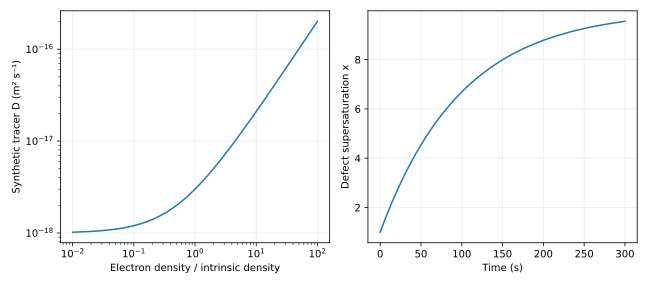

IIT Hyderabad · NPTEL · Independent study edition
Defect-mediated diffusion in semiconductors
A dopant profile can change when the electronic state changes, even at fixed temperature and unchanged crystal geometry. It can also change when oxidation injects point defects or implantation creates damage. Treating semiconductor diffusion as one immutable material constant can therefore confuse electronic equilibrium, atomic mobility, and the supply of defects that make motion possible.
Source spine: L53–55. Charged-defect population laws, balanced reaction models, and source–sink calculations are developed below. The oxygen diffusivity table was checked against the L55 source frame; its extrapolation remains an exercise-model prediction. The source's printed oxygen-solubility units are not adopted as validated physical number densities.
25.1 Establish the electronic variables first L53 00:21
A semiconductor has occupied and unoccupied electronic states separated by an energy gap. Let \(E_C\) and \(E_V\) denote conduction- and valence-band edges, and \(E_g=E_C-E_V>0\) the gap. An electron in the conduction band carries negative elementary charge; a hole represents a missing valence-band electron and carries positive charge in the band-transport description. The Fermi level \(E_F\) is the electronic chemical potential. All energies in the following expressions use one common reference and are in joules per particle, unless electronvolts are explicitly stated.
A donor tends to supply an electron and become positively ionized; an acceptor tends to receive an electron and become negatively ionized. Their ionization, compensation, and activation determine free-carrier densities. Chemically incorporated dopant concentration is therefore not identical to electrically active dopant concentration. Precipitates, complexes, and inactive sites can contain dopant atoms without producing the carrier population inferred from the nominal dose.
Under thermal equilibrium and nondegenerate band statistics, define effective state densities \(N_C,N_V\), in m⁻³. Electron and hole number densities are
\[n=N_Ce^{-(E_C-E_F)/(k_BT)},\qquad p=N_Ve^{-(E_F-E_V)/(k_BT)},\qquad np=n_i^2=N_CN_Ve^{-E_g/(k_BT)}.\tag{25.1}\]Here \(k_B\) is Boltzmann's constant and \(T\) absolute temperature. Multiplication cancels \(E_F\); taking the square root gives the intrinsic density. Degenerate doping and carrier injection can invalidate these simple exponentials or the common-equilibrium mass-action relation. These conditions must be checked before replacing a Fermi-level dependence by a power of \(n/n_i\).
Silicon and germanium have tetrahedrally coordinated diamond structures, but their atomic defects can have multiple charge states and relaxed geometries. Diffusion masks and surface processing provide boundary conditions, not just drawings of a concentration step. A high-temperature barrier must survive the actual thermal and chemical environment; a temporary lithographic resist should not be assumed to be such a barrier. The models here explain transport physics rather than prescribe a fabrication recipe.
25.2 A charged defect exchanges electrons with a reservoir L53 05:29
Let \(X^q\) denote an atomic defect with effective charge \(qe\), where \(e>0\) is elementary charge and signed integer \(q\) counts missing electrons relative to the neutral state. With other atomic reservoirs fixed, write its formation free energy as \(G_f^q(E_F)=G_f^q(0)+qE_F\). This convention makes a positive charge more expensive as the electronic chemical potential rises.
In a dilute equilibrium model, its dimensionless site fraction is proportional to its Boltzmann weight:
\[x_X^q=A_X^q\exp\left[-\frac{G_f^q(0)+qE_F}{k_BT}\right].\tag{25.2}\]The factor \(A_X^q\) represents the chosen site normalization and degeneracy factors not already included in the free energy. Negative charge states become more favorable as \(E_F\) rises. This changes the number of available atomic carriers. It does not say that their migration barriers or correlation factors are the same in every charge state.
For an illustrative vacancy-mediated tracer model, write \(D^*=\sum_qx_V^qB_V^q+\sum_qx_I^qB_I^q\), where \(V\) denotes vacancies, \(I\) self-interstitials, and each \(B\) has units m²s⁻¹ per unit defect fraction. It packages the atom-displacement geometry, defect mobility, and tracer correlations for the specified channel. Defining this convention avoids multiplying a number density by a diffusivity and incorrectly calling the result m²s⁻¹.
A restricted Ge-style model retains neutral and singly negative vacancy contributions. Refer the charged contribution to the intrinsic Fermi level \(E_{Fi}\). Equation(25.1) gives \(n/n_i=e^{(E_F-E_{Fi})/(k_BT)}\) when the band model and intrinsic reference are consistent. Equation(25.2) then gives
\[D^*(n)=D_{V^0}^*+(n/n_i)D_{V^-;i}^*.\tag{25.3}\]The second coefficient is the negative-vacancy contribution at intrinsic electronic conditions, not the entire intrinsic diffusivity. At \(n=n_i\), the intrinsic total is the sum of both terms. Additional negative charge states would introduce higher powers only under analogous equilibrium assumptions. Synthetic coefficients \(10^{-18}\) and \(2\times10^{-18}\)m²s⁻¹ give \(2.1\times10^{-17}\)m²s⁻¹ at \(n/n_i=10\). This is a demonstration of sensitivity, not a calibrated Ge fit or a universal law for Si.
25.3 Defect equilibrium requires sources and sinks L53 12:42
A highly perfect single crystal can have few internal sources or sinks for atomic defects. Surface ambient, oxide growth, implantation damage, interfaces, and dislocations can then control populations over the process time. Oxidation can inject self-interstitials, while implantation can produce excess vacancies and interstitials and extended damage. Temperature fixes an equilibrium target; it does not guarantee that the specimen reaches that target before the diffusion experiment ends.
Let \(x(t)\) be a dimensionless supersaturation of one defect population relative to its equilibrium value. An original well-mixed source–sink model is \(\dot x=G-k(x-1)\), where source strength \(G\) and removal coefficient \(k>0\) are in s⁻¹. For constant inputs and initial value \(x(0)=1\), integrating the linear equation gives
\[x(t)=1+(G/k)(1-e^{-kt}).\tag{25.4}\]The stationary supersaturation is \(1+G/k\), not one when the source persists. Synthetic \(G=0.09\)s⁻¹ and \(k=0.01\)s⁻¹ give \(x(100\,\mathrm s)=6.68909\). If a dilute diffusion channel scales with this population, its contribution is enhanced even with unchanged single-defect mobility. Turning the source off leaves an exponential return toward equilibrium. Changing sink density can change this relaxation and hence the observed dopant profile.
Spatially varying injection needs defect diffusion and reactions as well: \(\partial_tn_I=-\nabla\cdot\mathbf j_I+S_I-\mathcal R_I\), where \(n_I\) is defect number density, \(\mathbf j_I\) number flux, and source and removal terms have units m⁻³s⁻¹. Vacancy–interstitial recombination couples the equations. Electrostatic fields and charged-species chemical potentials may be required if local neutrality is not an adequate approximation. A constant-D Fick profile is a restricted reduction of this larger system.
A primary first-principles study explicitly treats dopant mechanisms with equilibrium and nonequilibrium point-defect populations: Nichols, Van de Walle, and Pantelides, Physical Review B40,5484, abstract. The accessible abstract supports the importance of both vacancy and interstitial channels; no numerical transition barrier or uninspected equation from its full article is used here. For Si, mechanism fractions must therefore be tied to dopant, temperature, electronic conditions, and processing history.

25.4 Dopant pairs must conserve atoms and charge L54 16:43
Let \(A_s\) denote a substitutional dopant, \(V\) a native vacancy, and \(I\) a host self-interstitial. Define \(P_V\) as a dopant–vacancy complex and \(P_I\) as a dopant–self-interstitial complex. The notation avoids calling both an interstitial dopant atom and a two-defect complex “AI.” Pair formation can be written \(A_s+V\rightleftharpoons P_V\) or \(A_s+I\rightleftharpoons P_I\). The products contain the dopant and the specified native defect.
For a charged reaction, either the pair charge equals the reactant charge sum or electronic carriers appear explicitly. For example, \(A_s^0+V^-\rightleftharpoons P_V^-\) conserves charge as written. A reaction yielding neutral \(P_V^0\) instead must release an electron on the product side. Charge balance cannot be recovered by changing only the equilibrium constant after writing an unbalanced reaction.
A mass-action rate for one neutral bookkeeping example is \(r=k_fn_sn_I-k_rn_P\), where the number densities are in m⁻³, association coefficient \(k_f\) in m³s⁻¹, and dissociation coefficient \(k_r\) in s⁻¹. Reaction contributions are \(\dot n_s=-r,\dot n_I=-r,\dot n_P=r\). Hence \(n_s+n_P\) conserves dopant and \(n_I+n_P\) conserves the tracked excess-interstitial inventory in this closed subsystem. Diffusion, generation, and annihilation add corresponding flux and source terms.
Strong attraction increases pair occupancy but can also cause reversible local shuttling. Long-range dopant displacement requires translation of the complex, exchange into new configurations, or decorrelation through partial dissociation. A total diffusivity obtained by summing channels needs a consistent coarse graining that does not double-count the same jump sequence. The laboratory integrates a dimensionless version of the closed reaction equations and checks both conserved sums to rounding accuracy; it does not assign fitted pair rates to a named dopant.
25.5 Hybrid solutes probe the supply of native defects L54 22:54
A substitutional dopant may become an interstitial dopant by a dissociative reaction \(A_s\rightleftharpoons A_i+V\). A kick-out reaction instead uses a host self-interstitial: \(A_s+I\rightleftharpoons A_i\), with restoration of the regular host atom implicit in the lattice-site bookkeeping. The second expression conserves the excess-atom count: the host interstitial fills the regular site as the dopant is displaced. Charge states and electrons or holes must be added consistently for a particular material.
For rapid state exchange and spatially constant fractions, total dopant flux reduces to \(J_A=-[\theta_iD_i+(1-\theta_i)D_s]\partial_xc_A\). Here \(c_A\) is total dissolved dopant molar concentration and \(\theta_i\) its interstitial fraction. A tiny fraction can dominate through a large \(D_i/D_s\). This is the same reduction derived in Chapter23; its applicability is especially sensitive to native defects in semiconductors.
If interstitial supply is restricted, the conversion reaction can become rate-limiting. If vacancy activity varies, the local partition between \(A_s\) and \(A_i\) varies. Then separate dopant-state and defect equations are needed. A dependence on dislocation density or surface condition is a useful diagnostic of source–sink kinetics, but it does not uniquely identify dissociative versus kick-out transport without additional constraints. Distinct microscopic models can produce the same reduced coefficient under one annealing condition.
25.6 Solubility, oxygen, and gettering concern different inventories L54 00:22
Retrograde solubility describes an equilibrium phase boundary with a solubility maximum below the host melting range, followed by decreasing solubility on further heating over some interval. A single Arrhenius expression with a fixed positive dissolution enthalpy is monotone and cannot describe the entire curve. Total incorporated dopant, dissolved dopant, and electrically active dopant are different inventories. Crossing a solubility boundary can redistribute material among them without conserving the active fraction.
Oxygen can enter silicon during Czochralski growth through interaction with the quartz environment. Subsequent thermal treatment can precipitate oxygen-containing phases in selected regions. Intrinsic gettering uses internal sinks associated with such structures to concentrate metallic contaminants away from sensitive device regions. Gettering redistributes impurities; it does not annihilate their atoms, guarantee capture of every species, or make precipitates harmless wherever they form. Sink location, capacity, binding, and the diffusion time to reach them all matter.
The L55 oxygen exercise supplies diffusivities at600,650,700,750,800,850°C: respectively \(3.24\times10^{-20},2.00\times10^{-19},1.03\times10^{-18},4.48\times10^{-18},1.71\times10^{-17},5.77\times10^{-17}\)m²s⁻¹. These entries were checked at the source frame1248s. Fitting \(\ln[D/(1\,\mathrm{m^2s^{-1}})]=a+b/T\) after converting to kelvin gives \(b=-29363.9\)K and \(a=-11.2460\). The corresponding molar enthalpy \(-Rb\) is244.145kJmol⁻¹, and extrapolation to1000°C gives \(D=1.25703\times10^{-15}\)m²s⁻¹. This is a fit to the lecture exercise, not independent validation of oxygen transport at that higher temperature.
The same slide labels solubility as m⁻³ while listing very small negative-exponent values. The later calculation carries that convention into a sub-unit number density. Without the original data provenance, these units and values do not justify a physical oxygen-solubility prediction. A transcription must not silently replace exponents or convert an unspecified fraction into a number density. This is a scientific data-quality limit rather than a reason to discard the independently usable diffusivity-fit exercise.
25.7 Measurement limits, laboratory, and worked exercises L55 15:41
A radioactive tracer loses detectable activity during annealing. With the tutorial's rounded 31Si half-life of2.6h, activity fraction after elapsed time \(t_h\), in hours, is \(2^{-t_h/2.6}\). The code obtains0.0695332 after10h and \(2.64194\times10^{-12}\) after100h. The fraction is not mathematically zero, but initial activity and detector background can make the signal unusable. This restricts that radiotracer protocol; stable-isotope heterostructures with SIMS provide another route to silicon self-diffusion measurements.
The laboratory separates source-table fitting from synthetic defect calculations and saves all numerical output. Pair integration uses scaled densities and dimensionless rates and conserves both tracked inventories within \(5\times10^{-16}\). The source–sink and charged-vacancy panels test different models. Their agreement with their own equations is a numerical check, not evidence that one microscopic mechanism governs a particular wafer.
Fermi-level sign. At fixed temperature, raise \(E_F\) by \(\Delta E>0\). How does a singly negative defect population change?
Solution
Equation(25.2) gives ratio \(e^{\Delta E/(k_BT)}\) for \(q=-1\). A singly positive state instead changes by \(e^{-\Delta E/(k_BT)}\). These are equilibrium population factors. A diffusion coefficient also depends on the state-specific mobility and correlation, so a population increase alone need not determine its total change when multiple channels compete.
Charge-balanced pairing. Repair \(A_s^0+V^-\rightleftharpoons P_V^0\).
Solution
Add an electron on the product side: \(A_s^0+V^-\rightleftharpoons P_V^0+e^-\). Charge is−1 on both sides. Its mass-action relation includes electron activity. Alternatively a negative pair would conserve charge without the electronic reactant, but that is a different state and equilibrium constant. The chemical labels and charge states jointly define the reaction.
Source removal. If the source in (25.4) is turned off at time \(t_0\), find the subsequent supersaturation.
Solution
For \(t\geq t_0\), solve \(\dot x=-k(x-1)\) with initial value \(x(t_0)\). The result is \(x(t)=1+[x(t_0)-1]e^{-k(t-t_0)}\). A finite sink relaxation time means the diffusion enhancement can persist after source removal. An instantaneous switch to equilibrium defect concentration would contradict this model.
Reaction conservation. Identify two invariants of the closed pair equations and explain what destroys each.
Solution
Adding the dopant equations gives \(d(n_s+n_P)/dt=0\). Adding interstitial and pair equations gives \(d(n_I+n_P)/dt=0\). Boundary dopant loss or precipitation removes the first from the chosen subsystem; defect injection, annihilation, or recombination changes the second. Reactions within the pair subsystem alone preserve both. A model that consumes native defects without tracking them or a reservoir misses this inventory constraint.
Arrhenius units. Why must the oxygen fit use kelvin and why does \(-Rb\) give Jmol⁻¹?
Solution
The exponential depends on absolute thermal energy, so reciprocal Celsius is not the Arrhenius coordinate. A slope against \(1/T\) has units kelvin. Multiplying by \(R\), in Jmol⁻¹K⁻¹, produces Jmol⁻¹. A per-atom energy in electronvolts instead uses Boltzmann's constant expressed in eVK⁻¹. Using a base10 logarithm adds a factor \(\ln10\) to the conversion. Those conventions cannot be mixed silently.
Gettering evidence. A metal concentration falls in the active layer after oxygen precipitation. What additional evidence is needed to call the process successful intrinsic gettering?
Solution
Show where the metal went, whether precipitate-associated sinks contain it, and whether the active-region electrical properties improved under the actual process history. Compare a control anneal without the intended sink structure and assess precipitate location and defect damage. A lower dissolved concentration can result from precipitation or migration elsewhere; it does not establish universal removal or device benefit. Total atoms remain conserved unless the specimen exchanges them with its environment.
Python laboratory
Run code/ch25.py. Inputs and scientific limits are specified in the chapter and program.
Complete runnable source
"""Charged-defect models and frame-verified lecture oxygen fit."""
from pathlib import Path
import json
import numpy as np
from scipy.integrate import solve_ivp
import matplotlib
import matplotlib.pyplot as plt
matplotlib.use("Agg")
matplotlib.rcParams["svg.hashsalt"] = "ch25"
ROOT = Path(__file__).resolve().parents[1]
R = 8.31446261815324
def main():
T = np.array([600, 650, 700, 750, 800, 850]) + 273.15
D = np.array([3.24e-20, 2e-19, 1.03e-18, 4.48e-18, 1.71e-17, 5.77e-17])
slope, intercept = np.polyfit(1 / T, np.log(D), 1)
prediction = np.exp(intercept + slope / (1000 + 273.15))
times = np.linspace(0, 300, 301)
def reaction(t, y):
rate = 2 * y[0] * y[1] - 0.5 * y[2]
return [-rate, -rate, rate]
sol = solve_ivp(reaction, [0, 20], [1, 0.2, 0], rtol=1e-10, atol=1e-12)
dopant_error = float(np.max(abs(sol.y[0] + sol.y[2] - 1)))
defect_error = float(np.max(abs(sol.y[1] + sol.y[2] - 0.2)))
assert dopant_error < 1e-12 and defect_error < 1e-12
enhancement = 1 + 9 * (1 - np.exp(-0.01 * times))
ratio = np.logspace(-2, 2, 200)
diffusivity = 1e-18 + ratio * 2e-18
out = {
"status": "synthetic defects; separately labeled source oxygen D data",
"oxygen_tutorial": {
"source_frame": "L55 at1248s",
"T_C": [600, 650, 700, 750, 800, 850],
"D_m2_s": D.tolist(),
"slope_K": float(slope),
"ln_prefactor_SI": float(intercept),
"Q_J_mol": float(-R * slope),
"D_at_1000C_m2_s": float(prediction),
"limit": "lecture exercise extrapolation; no empirical validation",
},
"charged_model_at_ratio_10_m2_s": float(1e-18 + 10 * 2e-18),
"source_sink_x_at100s": float(1 + 9 * (1 - np.exp(-1))),
"pair_conservation": {
"dopant_error": dopant_error,
"defect_error": defect_error,
},
"Si31_activity_fraction_half_life_2p6h": {
str(h): float(2 ** (-h / 2.6)) for h in [1, 10, 50, 100, 200]
},
}
fig, axes = plt.subplots(1, 2, figsize=(9, 4))
axes[0].loglog(ratio, diffusivity)
axes[0].set(
xlabel="Electron density / intrinsic density",
ylabel="Synthetic tracer D (m² s⁻¹)",
)
axes[1].plot(times, enhancement)
axes[1].set(xlabel="Time (s)", ylabel="Defect supersaturation x")
for ax in axes:
ax.grid(alpha=0.25)
fig.tight_layout()
fig.savefig(ROOT / "assets/ch25-defects.svg", metadata={"Date": None})
plt.close(fig)
(ROOT / "code/ch25-output.json").write_text(
json.dumps(out, indent=2) + "\n"
)
print(json.dumps(out, indent=2))
if __name__ == "__main__":
main()
Recorded execution output
{
"status": "synthetic defects; separately labeled source oxygen D data",
"oxygen_tutorial": {
"source_frame": "L55 at1248s",
"T_C": [
600,
650,
700,
750,
800,
850
],
"D_m2_s": [
3.24e-20,
2e-19,
1.03e-18,
4.48e-18,
1.71e-17,
5.77e-17
],
"slope_K": -29363.91379618557,
"ln_prefactor_SI": -11.246040386218313,
"Q_J_mol": 244145.1635810591,
"D_at_1000C_m2_s": 1.2570277336866137e-15,
"limit": "lecture exercise extrapolation; no empirical validation"
},
"charged_model_at_ratio_10_m2_s": 2.1000000000000002e-17,
"source_sink_x_at100s": 6.6890850294570185,
"pair_conservation": {
"dopant_error": 4.440892098500626e-16,
"defect_error": 1.942890293094024e-16
},
"Si31_activity_fraction_half_life_2p6h": {
"1": 0.7659831786679869,
"10": 0.06953321725603046,
"50": 1.6254051140376568e-06,
"100": 2.6419417847397683e-12,
"200": 6.979856393953953e-24
}
}